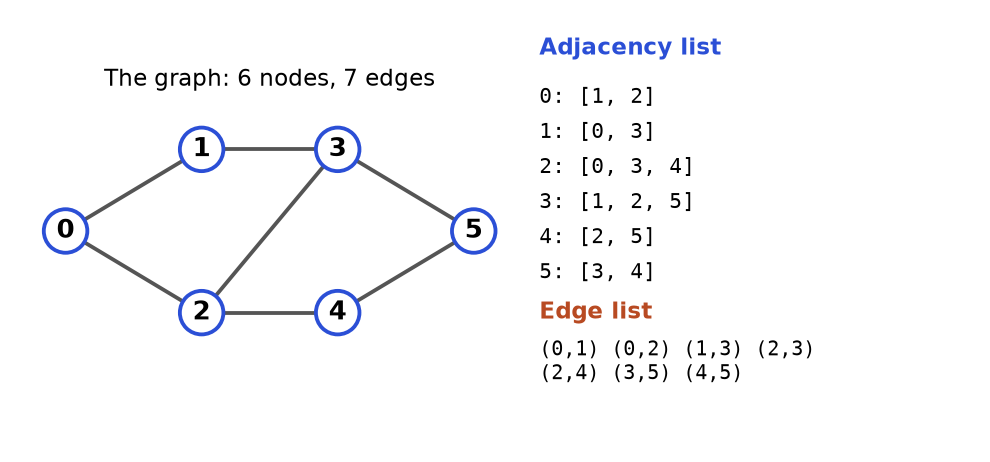
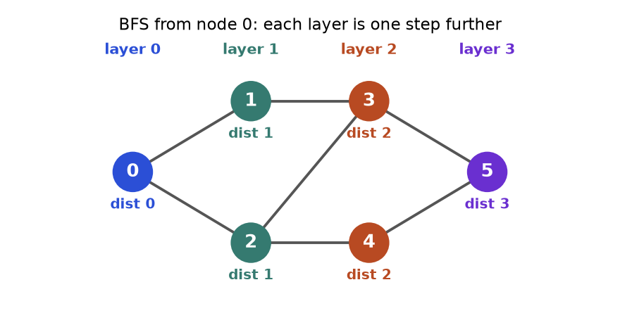
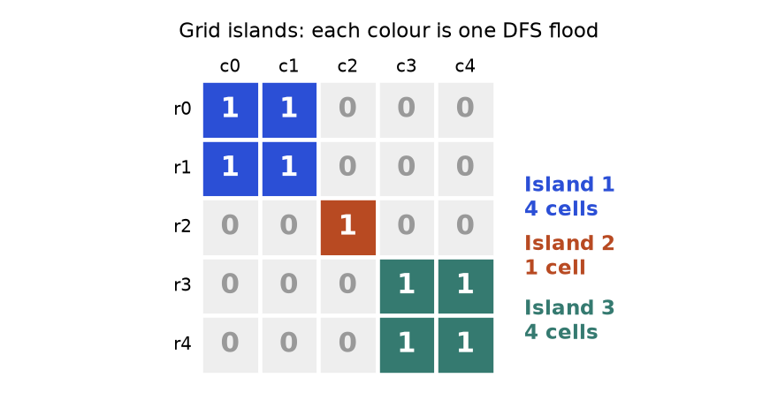
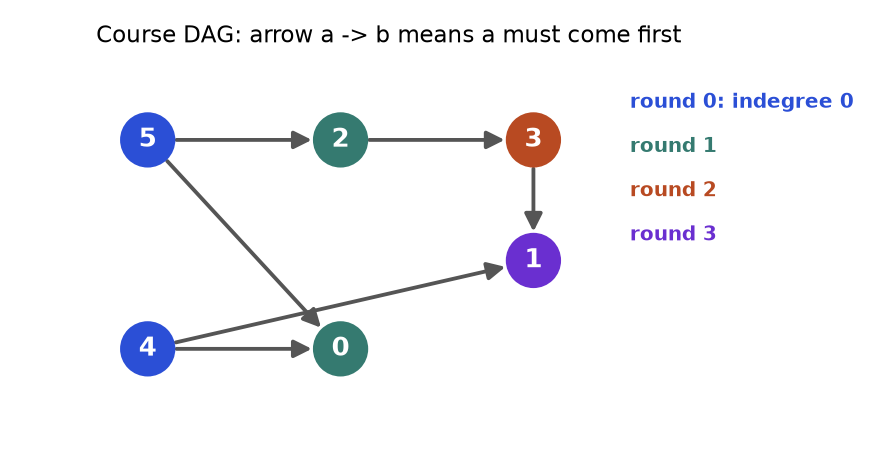
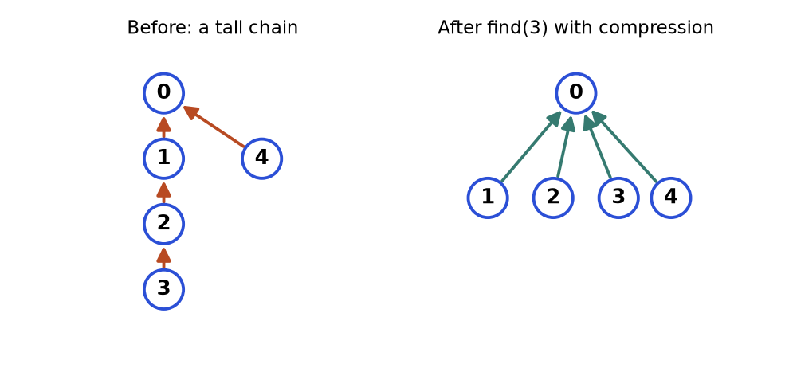
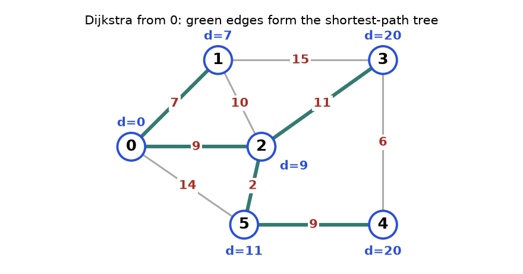
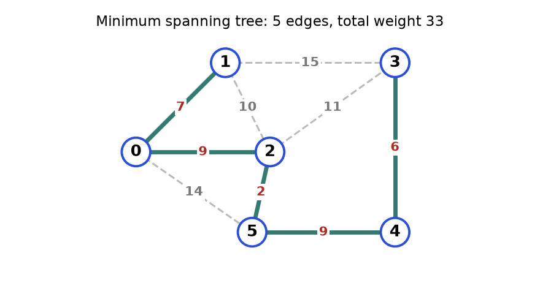
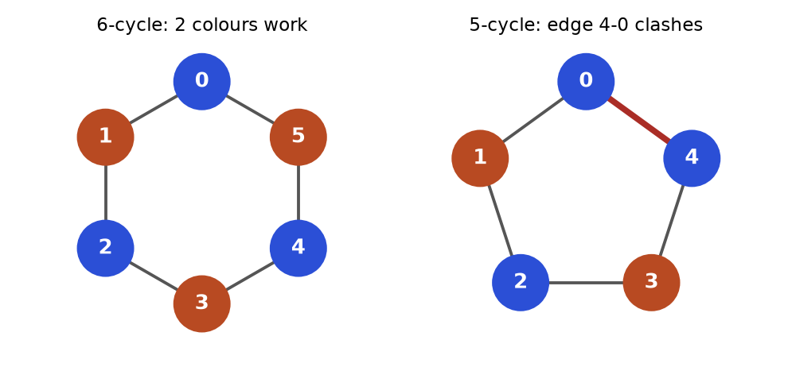

Open a map app and ask for the quickest way home. Open a social network and see "people you may know". Open a build tool and watch it decide which file to compile first. Open a course catalogue and ask "can I finish this degree in four semesters?" Four different products, one hidden shape: things and connections between things. That shape is called a graph, and it is the most general data structure in this document. Trees (Chapter 7) are graphs with a special shape. Grids, mazes, word puzzles, dependency lists and road maps are graphs in disguise.
Interviewers love graphs for one reason: the hard part is not the code, it is seeing the graph. Once you say "the cells are nodes, the neighbouring cells are edges", the problem becomes one of six well-known recipes. This chapter gives you those recipes, each one drawn, traced step by step, and tested. By the end you can model a problem as a graph, choose between BFS, DFS, topological sort, union-find, Dijkstra and a spanning tree, and write the code from a template in a few minutes. This chapter assumes Chapter 5 (queues, stacks), Chapter 6 (recursion) and Chapter 7 (heaps). For a gentler first look at graph code, the cs document has a chapter on the same ideas (see also: the Algorithms chapters of the CS document); this chapter goes deeper and is organised by pattern.
| Word | Plain meaning | Example |
|---|---|---|
| Graph | A set of nodes plus a set of edges | Airports and flights |
| Node (vertex) | One thing in the graph | One airport |
| Edge | A link between two nodes | A flight between two airports |
| Undirected / directed | Edge works both ways / only one way (an arrow) | Friendship / "follows" |
| Weighted | Each edge carries a number (cost, distance, time) | Flight price |
| Neighbour | A node you can reach by one edge | Cities with a direct flight |
| Degree | Number of edges at a node (directed: in-degree and out-degree) | Hub airports have a high degree |
| Path | A walk along edges from one node to another | A trip with layovers |
| Cycle | A path that ends where it started | A loop of prerequisites |
| Connected | Every node can reach every other node | One road network |
| Component | A maximal group of nodes that can reach each other | An island |
| DAG | Directed graph with no cycle | Course prerequisites |
| V and E | Number of nodes and number of edges | Used in Big-O: O(V + E) |
Every code block in this chapter runs on its own and the output shown under it was produced by running it. Nodes are numbered from 0 so they can be list indexes.
How to recognise a graph problem. Look for these signals in the statement:

How to read it: The left side is the picture. The right side lists, for each node, its neighbours (adjacency list) and then every edge once (edge list). Node 2 touches 0, 3 and 4, so its row reads 2: [0, 3, 4]. An undirected edge appears in two rows, once for each end.
| Representation | Memory | Is there an edge a-b? | List neighbours of a | Use when |
|---|---|---|---|---|
| Adjacency list | O(V + E) | O(degree of a) | O(degree of a) | Almost always. Sparse graphs, BFS, DFS, Dijkstra |
| Adjacency matrix | O(V2) | O(1) | O(V) | Small dense graphs, Floyd-Warshall, the input is already a matrix |
| Edge list | O(E) | O(E) | O(E) | Kruskal, Bellman-Ford, union-find; the input format |
from collections import defaultdict
def build_graph(n, edges, directed=False):
graph = [[] for _ in range(n)] # one empty list per node 0..n-1
for a, b in edges:
graph[a].append(b) # edge a -> b
if not directed:
graph[b].append(a) # undirected: also b -> a
return graph
edges = [(0, 1), (0, 2), (1, 3), (2, 3), (2, 4), (3, 5), (4, 5)]
print(build_graph(6, edges))
print(build_graph(6, edges, directed=True))
# the same graph as a dict of sets (handy when nodes are names, not numbers)
names = defaultdict(set)
for a, b in [("ann", "bo"), ("bo", "cy"), ("ann", "cy")]:
names[a].add(b)
names[b].add(a)
print({k: sorted(v) for k, v in sorted(names.items())})[[1, 2], [0, 3], [0, 3, 4], [1, 2, 5], [2, 5], [3, 4]]
[[1, 2], [3], [3, 4], [5], [5], []]
{'ann': ['bo', 'cy'], 'bo': ['ann', 'cy'], 'cy': ['ann', 'bo']}Trace. Building the undirected list from the first four edges. The list starts as six empty lists.
| Step | Edge read | Action | graph[0] | graph[1] | graph[2] | graph[3] |
|---|---|---|---|---|---|---|
| 0 | none | start | [] | [] | [] | [] |
| 1 | (0, 1) | add 1 to graph[0], 0 to graph[1] | [1] | [0] | [] | [] |
| 2 | (0, 2) | add 2 to graph[0], 0 to graph[2] | [1, 2] | [0] | [0] | [] |
| 3 | (1, 3) | add 3 to graph[1], 1 to graph[3] | [1, 2] | [0, 3] | [0] | [1] |
| 4 | (2, 3) | add 3 to graph[2], 2 to graph[3] | [1, 2] | [0, 3] | [0, 3] | [1, 2] |
graph[a].append(b), node b cannot reach a, and BFS silently misses nodes. Wrong: build with one direction and call the graph undirected. Right: append both directions, or use a flag as in the template.[[]] * n to create the lists. That makes n names for the same list, so one append appears in every row. Right: [[] for _ in range(n)].Problem 8.1.1 (Easy) Given an undirected graph as an edge list, return the degree of every node and the node with the most neighbours.
| Idea | Degree of a node = how many edge ends touch it. Each edge adds one to both of its ends. |
|---|---|
| Brute force | For every node, scan the whole edge list and count. O(V times E). |
| Better approach | One pass over the edges, adding 1 to both ends. O(V + E). |
| Code | The block after this table. |
| Dry run | Edges (0,1),(0,2),(1,3): after edge 1 degrees [1,1,0,0]; after edge 2 [2,1,1,0]; after edge 3 [2,2,1,1]. Node 0 has the most (tie with node 1; max returns the first). |
| Complexity | Time O(V + E), space O(V). |
| Edge cases | Isolated nodes have degree 0. A self-loop (a, a) adds 2 to node a in this code, which is the usual convention. |
def degrees(n, edges):
deg = [0] * n
for a, b in edges:
deg[a] += 1
deg[b] += 1
return deg
edges = [(0, 1), (0, 2), (1, 3), (2, 3), (2, 4), (3, 5), (4, 5)]
deg = degrees(6, edges)
print(deg)
best = max(range(6), key=lambda v: deg[v])
print("most connected:", best)
assert sum(deg) == 2 * len(edges) # handshake rule: degrees add up to twice the edges
assert degrees(4, [(0, 1), (0, 2), (1, 3)]) == [2, 2, 1, 1][2, 2, 3, 3, 2, 2]
most connected: 2Problem 8.1.2 (Easy) A "star" graph has one centre node joined to every other node. Given its edges, find the centre in O(1).
| Idea | The centre is in every edge. So it must be in both of the first two edges, and it is the only node they share. |
|---|---|
| Brute force | Count the degree of every node and return the one with degree n - 1. O(V + E). |
| Better approach | Compare the first two edges only. The common node is the centre. O(1). |
| Code | The block after this table. |
| Dry run | Edges [(1,2),(2,3),(4,2)]: first edge {1,2}, second edge {2,3}. Common node: 2. Check: node 2 is in all three edges. |
| Complexity | Time O(1), space O(1). |
| Edge cases | A star needs at least two edges (three nodes). With one edge both ends look like a centre, so the question is not defined. |
def star_center(edges):
a, b = edges[0]
c, d = edges[1]
return a if a in (c, d) else b
assert star_center([(1, 2), (2, 3), (4, 2)]) == 2
assert star_center([(1, 2), (5, 1), (1, 3), (1, 4)]) == 1
print(star_center([(1, 2), (2, 3), (4, 2)]))
print(star_center([(1, 2), (5, 1), (1, 3), (1, 4)]))2
1defaultdict(list) or defaultdict(set). A set removes duplicate edges and gives O(1) edge lookup.How to recognise it. The statement gives a grid of 0s and 1s, a set of words, a lock with digits, or a puzzle with moves, and asks for "fewest moves", "can you reach", or "how many regions".
| Problem says | Node is | Neighbours are |
|---|---|---|
| Maze / grid, move 4 ways | cell (row, col) | up, down, left, right cells inside the grid and not a wall |
| Word ladder (change one letter) | a word | words in the list that differ in exactly one letter |
| Combination lock with 4 wheels | a 4-digit string | strings with one wheel turned one step up or down |
| Knight on a chessboard | square (row, col) | the 8 knight jumps that stay on the board |
| Sliding puzzle | whole board layout as a tuple | layouts after one legal slide |
DIRS = [(-1, 0), (1, 0), (0, -1), (0, 1)] # up, down, left, right
def grid_neighbours(grid, r, c):
rows, cols = len(grid), len(grid[0])
for dr, dc in DIRS:
nr, nc = r + dr, c + dc
if 0 <= nr < rows and 0 <= nc < cols and grid[nr][nc] == 0: # 0 = open, 1 = wall
yield (nr, nc)
grid = [[0, 0, 1],
[0, 1, 0],
[0, 0, 0]]
print(list(grid_neighbours(grid, 1, 0)))
print(list(grid_neighbours(grid, 0, 0)))
print(list(grid_neighbours(grid, 2, 2)))[(0, 0), (2, 0)]
[(1, 0), (0, 1)]
[(1, 2), (2, 1)]Trace. Neighbours of cell (1, 0) in that grid. The grid is 3 rows by 3 columns.
| Direction | dr, dc | New cell | Inside the grid? | Value there | Kept? |
|---|---|---|---|---|---|
| up | -1, 0 | (0, 0) | yes | 0 (open) | yes |
| down | 1, 0 | (2, 0) | yes | 0 (open) | yes |
| left | 0, -1 | (1, -1) | no, column -1 | not read | no |
| right | 0, 1 | (1, 1) | yes | 1 (wall) | no |
0 <= nr < rows before reading the grid.Comparing a word with every other word is slow. Instead, replace each letter in turn with a star. Words that share a pattern such as h*t differ in only that position, so they are neighbours. Build a dictionary from pattern to words once.
from collections import defaultdict
def build_buckets(words):
buckets = defaultdict(list)
for w in words:
for i in range(len(w)):
buckets[w[:i] + "*" + w[i + 1:]].append(w)
return buckets
def word_neighbours(word, buckets):
result = set()
for i in range(len(word)):
for other in buckets[word[:i] + "*" + word[i + 1:]]:
if other != word:
result.add(other)
return sorted(result)
words = ["hit", "hot", "dot", "dog", "lot", "log", "cog"]
buckets = build_buckets(words)
print(sorted(buckets["h*t"]), sorted(buckets["*ot"]), sorted(buckets["do*"]))
print(word_neighbours("hot", buckets))
print(word_neighbours("dog", buckets))['hit', 'hot'] ['dot', 'hot', 'lot'] ['dog', 'dot']
['dot', 'hit', 'lot']
['cog', 'dot', 'log']Problem 8.2.1 (Easy) For every open cell of a grid, count how many open neighbouring cells a walker can step to (4 directions, walls are 1). Return the grid of counts.
| Idea | For each open cell, call the neighbour generator and count. |
|---|---|
| Brute force | The same, with the bounds check written inline four times. Same complexity but easy to get wrong. |
| Better approach | Reuse one DIRS list and one bounds test, as in the template. |
| Code | The block after this table. |
| Dry run | Grid [[0,0],[0,1]]. Cell (0,0): down (1,0) open, right (0,1) open: 2. Cell (0,1): left (0,0) open, down (1,1) wall: 1. Cell (1,0): up (0,0) open, right (1,1) wall: 1. Cell (1,1) is a wall: -1 (marker). |
| Complexity | Time O(rows times cols), space O(rows times cols). |
| Edge cases | A 1 by 1 grid has no neighbours. Walls are marked with -1 so they are not confused with a cell that has 0 moves. |
def move_counts(grid):
rows, cols = len(grid), len(grid[0])
result = [[-1] * cols for _ in range(rows)]
for r in range(rows):
for c in range(cols):
if grid[r][c] == 1:
continue
count = 0
for dr, dc in [(-1, 0), (1, 0), (0, -1), (0, 1)]:
nr, nc = r + dr, c + dc
if 0 <= nr < rows and 0 <= nc < cols and grid[nr][nc] == 0:
count += 1
result[r][c] = count
return result
print(move_counts([[0, 0], [0, 1]]))
print(move_counts([[0, 0, 1], [0, 1, 0], [0, 0, 0]]))
assert move_counts([[0]]) == [[0]][[2, 1], [1, -1]]
[[2, 1, -1], [2, -1, 1], [2, 2, 2]]set.How to recognise it.

How to read it: Node 0 is layer 0. Its neighbours 1 and 2 form layer 1. Their new neighbours 3 and 4 form layer 2, and node 5 is layer 3. A queue holds the layers in this order, which is why the first arrival is always the shortest.
from collections import deque
def bfs(graph, start):
dist = {start: 0} # dist doubles as the visited set
queue = deque([start])
while queue:
node = queue.popleft() # oldest item first
for nxt in graph[node]:
if nxt not in dist: # first arrival = shortest
dist[nxt] = dist[node] + 1
queue.append(nxt) # mark when pushing, not when popping
return dist
graph = [[1, 2], [0, 3], [0, 3, 4], [1, 2, 5], [2, 5], [3, 4]]
print(bfs(graph, 0)){0: 0, 1: 1, 2: 1, 3: 2, 4: 2, 5: 3}Trace of that call. "Seen" means already in dist.
| Step | Pop | Neighbours checked | New (distance) | Queue after | dist so far |
|---|---|---|---|---|---|
| 0 | - | - | start 0 (0) | [0] | {0:0} |
| 1 | 0 | 1 new, 2 new | 1 (1), 2 (1) | [1, 2] | {0:0, 1:1, 2:1} |
| 2 | 1 | 0 seen, 3 new | 3 (2) | [2, 3] | adds 3:2 |
| 3 | 2 | 0 seen, 3 seen, 4 new | 4 (2) | [3, 4] | adds 4:2 |
| 4 | 3 | 1 seen, 2 seen, 5 new | 5 (3) | [4, 5] | adds 5:3 |
| 5 | 4 | 2 seen, 5 seen | none | [5] | unchanged |
| 6 | 5 | 3 seen, 4 seen | none | [] | final |
Problem 8.3.1 (Easy) Return the shortest path (list of nodes) from a start to a target in an undirected graph, or an empty list if there is none.
| Idea | Run BFS and remember, for each node, the node we came from (parent). Walk back from the target to the start and reverse. |
|---|---|
| Brute force | Generate every simple path with DFS and keep the shortest. Can be exponential. |
| Better approach | BFS with a parent map. O(V + E). |
| Code | The block after this table. |
| Dry run | On the graph above from 0 to 5: parent[1]=0, parent[2]=0, parent[3]=1, parent[4]=2, parent[5]=3. Walk back: 5, 3, 1, 0. Reverse: [0, 1, 3, 5], length 3 edges. |
| Complexity | Time O(V + E), space O(V). |
| Edge cases | start equals target gives [start]. Unreachable target gives []. Stop early once the target is popped or pushed. |
from collections import deque
def shortest_path(graph, start, target):
parent = {start: None}
queue = deque([start])
while queue:
node = queue.popleft()
if node == target:
break
for nxt in graph[node]:
if nxt not in parent:
parent[nxt] = node
queue.append(nxt)
if target not in parent:
return []
path = []
while target is not None: # walk back to the start
path.append(target)
target = parent[target]
return path[::-1]
graph = [[1, 2], [0, 3], [0, 3, 4], [1, 2, 5], [2, 5], [3, 4], []] # node 6 is isolated
print(shortest_path(graph, 0, 5))
print(shortest_path(graph, 4, 4))
print(shortest_path(graph, 0, 6))
assert shortest_path(graph, 0, 5) == [0, 1, 3, 5][0, 1, 3, 5]
[4]
[]Problem 8.3.2 (Medium) A grid holds 0 (empty), 1 (fresh orange), 2 (rotten orange). Each minute every fresh orange next to a rotten one (4 directions) becomes rotten. Return the minutes until none is fresh, or -1 if some can never rot.
| Idea | Several starting points at once: this is multi-source BFS. Put every rotten orange in the queue at minute 0. One BFS layer is one minute. |
|---|---|
| Brute force | Simulate each minute by scanning the whole grid until nothing changes. O(minutes times cells), slow for long chains. |
| Better approach | Queue of rotten cells, process one full layer per minute, count fresh oranges that remain. |
| Code | The block after this table. |
| Dry run | Grid [[2,1,1],[1,1,0],[0,1,1]]. Minute 0: rotten {(0,0)}, fresh 6. Minute 1: (0,1),(1,0) rot, fresh 4. Minute 2: (0,2),(1,1) rot, fresh 2. Minute 3: (2,1) rots, fresh 1. Minute 4: (2,2) rots, fresh 0. Answer 4. |
| Complexity | Time O(rows times cols), space O(rows times cols). |
| Edge cases | No fresh oranges: answer 0 even with no rotten ones. A fresh orange walled off by empty cells gives -1. Do not count a minute for the last layer if it adds nothing new. |
from collections import deque
def oranges_rotting(grid):
rows, cols = len(grid), len(grid[0])
queue, fresh = deque(), 0
for r in range(rows):
for c in range(cols):
if grid[r][c] == 2:
queue.append((r, c))
elif grid[r][c] == 1:
fresh += 1
minutes = 0
while queue and fresh:
for _ in range(len(queue)): # process exactly one layer = one minute
r, c = queue.popleft()
for dr, dc in [(-1, 0), (1, 0), (0, -1), (0, 1)]:
nr, nc = r + dr, c + dc
if 0 <= nr < rows and 0 <= nc < cols and grid[nr][nc] == 1:
grid[nr][nc] = 2
fresh -= 1
queue.append((nr, nc))
minutes += 1
return minutes if fresh == 0 else -1
assert oranges_rotting([[2, 1, 1], [1, 1, 0], [0, 1, 1]]) == 4
assert oranges_rotting([[2, 1, 1], [0, 1, 1], [1, 0, 1]]) == -1
assert oranges_rotting([[0, 2]]) == 0
print(oranges_rotting([[2, 1, 1], [1, 1, 0], [0, 1, 1]]))
print(oranges_rotting([[2, 1, 1], [0, 1, 1], [1, 0, 1]]))
print(oranges_rotting([[0, 2]]))4
-1
0Problem 8.3.3 (Hard) Word ladder. Change one letter at a time, each new word must be in the list. Return the number of words in the shortest sequence from begin to end, or 0.
| Idea | Node = word. Edge = one letter apart. Shortest transformation = BFS. Build the neighbours with wildcard buckets (Section 8.2). |
|---|---|
| Brute force | Compare each word with every other word at every step: O(W2 times L) per BFS layer or worse. |
| Better approach | Build the buckets once. BFS pops a word, looks up its L patterns, and visits the words in those buckets. |
| Code | The block after this table. |
| Dry run | begin hit, end cog. hit has pattern h*t, whose bucket holds hit and hot: visit hot (length 2). hot gives dot and lot (3). dot gives dog, lot gives log (4). dog gives cog (5). Answer 5: hit, hot, dot, dog, cog. |
| Complexity | Time O(W times L2), space O(W times L2). |
| Edge cases | If end is not in the list the answer is 0. begin need not be in the list. Words have equal length. |
from collections import deque, defaultdict
def ladder_length(begin, end, words):
if end not in words:
return 0
buckets = defaultdict(list)
for w in set(words) | {begin}:
for i in range(len(w)):
buckets[w[:i] + "*" + w[i + 1:]].append(w)
seen = {begin}
queue = deque([(begin, 1)])
while queue:
word, length = queue.popleft()
if word == end:
return length
for i in range(len(word)):
for nxt in buckets[word[:i] + "*" + word[i + 1:]]:
if nxt not in seen:
seen.add(nxt)
queue.append((nxt, length + 1))
return 0
words = ["hot", "dot", "dog", "lot", "log", "cog"]
assert ladder_length("hit", "cog", words) == 5
assert ladder_length("hit", "cog", ["hot", "dot", "dog", "lot", "log"]) == 0
print(ladder_length("hit", "cog", words))
print(ladder_length("hit", "cog", ["hot", "dot", "dog", "lot", "log"]))5
0queue.pop(0) shifts every remaining item and costs O(n), so BFS becomes O(V2). Use collections.deque and popleft(), which is O(1).deque: push 0-cost neighbours on the front and 1-cost neighbours on the back. It gives shortest paths in O(V + E) with no heap.How to recognise it.

How to read it: Each colour is one flood: DFS starts on an unvisited 1, visits every touching 1, and the count goes up by one. The big loop over all cells starts exactly three floods, so the answer is 3. The diagonal neighbour of the orange cell does not join the blue island because only 4 directions count.
def dfs(graph, node, seen, order):
seen.add(node)
order.append(node) # "visit" the node
for nxt in graph[node]:
if nxt not in seen:
dfs(graph, nxt, seen, order)
def count_components(graph):
seen, count = set(), 0
for start in range(len(graph)): # outer loop catches every island
if start not in seen:
dfs(graph, start, seen, [])
count += 1
return count
graph = [[1, 2], [0, 3], [0, 3, 4], [1, 2, 5], [2, 5], [3, 4]]
order, seen = [], set()
dfs(graph, 0, seen, order)
print(order)
two_groups = [[1], [0], [3], [2], []] # {0,1}, {2,3}, {4}
print(count_components(two_groups))[0, 1, 3, 2, 4, 5]
3Trace of dfs(graph, 0, ...). The stack column is the chain of calls waiting for an answer.
| Step | Action | Stack (bottom to top) | Visit order so far |
|---|---|---|---|
| 1 | call dfs(0), visit 0 | 0 | 0 |
| 2 | neighbours of 0 are 1, 2: go to 1 | 0, 1 | 0, 1 |
| 3 | neighbours of 1: 0 seen, 3 new: go to 3 | 0, 1, 3 | 0, 1, 3 |
| 4 | neighbours of 3: 1 seen, 2 new: go to 2 | 0, 1, 3, 2 | 0, 1, 3, 2 |
| 5 | neighbours of 2: 0 seen, 3 seen, 4 new: go to 4 | 0, 1, 3, 2, 4 | 0, 1, 3, 2, 4 |
| 6 | neighbours of 4: 2 seen, 5 new: go to 5 | 0, 1, 3, 2, 4, 5 | 0, 1, 3, 2, 4, 5 |
| 7 | neighbours of 5: 3 seen, 4 seen: return | 0, 1, 3, 2, 4 | unchanged |
| 8 | back up through 4, 2, 3, 1, 0; each has no new neighbour (0 would try 2: seen) | empty | 0, 1, 3, 2, 4, 5 |
Notice the difference from BFS: BFS visited 0, 1, 2, 3, 4, 5 (by distance). DFS visited 0, 1, 3, 2, 4, 5 (as deep as possible first). Both reach the same nodes. Only BFS gives shortest distances.
Python stops recursion at about 1000 calls by default. A path of length 100,000 would crash. The loop version never crashes, because the stack lives in a list.
def dfs_iterative(graph, start):
seen = {start}
stack = [start]
order = []
while stack:
node = stack.pop() # newest item first
order.append(node)
for nxt in graph[node]:
if nxt not in seen:
seen.add(nxt)
stack.append(nxt)
return order
graph = [[1, 2], [0, 3], [0, 3, 4], [1, 2, 5], [2, 5], [3, 4]]
print(dfs_iterative(graph, 0))[0, 2, 4, 5, 3, 1]The order differs from the recursive one (2 comes before 1) because the stack pops the last pushed neighbour first. Both are valid DFS orders; interviews only care that you explore deeply and mark nodes.
Problem 8.4.1 (Medium) Count the islands in a grid of "1" (land) and "0" (water). An island is land joined in 4 directions.
| Idea | Cells are nodes, touching land cells are neighbours. Scan the grid; on each unvisited land cell, sink the whole island and add one. |
|---|---|
| Brute force | Label every land cell with a union of coordinates and compare all pairs: O(cells2). |
| Better approach | DFS flood. To avoid a seen set, overwrite visited land with "0" (sink it). Mention that this changes the input. |
| Code | The block after this table. |
| Dry run | The grid of Figure 8.3. Scan row 0: cell (0,0) is land, count 1, sink (0,0),(0,1),(1,0),(1,1). The rest of rows 0 and 1 is water. (2,2) is land: count 2, sink it. (3,3) is land: count 3, sink the four cells. Done: 3. |
| Complexity | Time O(rows times cols): each cell is sunk once. Space O(rows times cols) worst case for the stack. |
| Edge cases | Empty grid: 0. All water: 0. All land: 1. |
def num_islands(grid):
grid = [list(row) for row in grid] # copy so the caller's data is unchanged
rows, cols = len(grid), len(grid[0]) if grid else 0
count = 0
for r in range(rows):
for c in range(cols):
if grid[r][c] != "1":
continue
count += 1
stack = [(r, c)]
grid[r][c] = "0" # sink on push
while stack:
cr, cc = stack.pop()
for dr, dc in [(-1, 0), (1, 0), (0, -1), (0, 1)]:
nr, nc = cr + dr, cc + dc
if 0 <= nr < rows and 0 <= nc < cols and grid[nr][nc] == "1":
grid[nr][nc] = "0"
stack.append((nr, nc))
return count
g = ["11000", "11000", "00100", "00011", "00011"]
assert num_islands(g) == 3
assert num_islands(["000"]) == 0
assert num_islands([]) == 0
print(num_islands(g), num_islands(["111", "111"]), num_islands([]))3 1 0Problem 8.4.2 (Medium) Detect a cycle in an undirected graph.
| Idea | During DFS, reaching an already-visited node means a cycle, unless that node is the one we just came from (the same edge walked backwards). |
|---|---|
| Brute force | Remove each edge in turn and test whether its ends are still connected: O(E times (V + E)). |
| Better approach | DFS that carries the parent. A seen neighbour that is not the parent proves a cycle. O(V + E). |
| Code | The block after this table. |
| Dry run | Triangle 0-1-2. dfs(0, parent none): visit 1 (parent 0). From 1 visit 2 (parent 1). From 2 look at 0: seen, and 0 is not the parent (1), so cycle. A path 0-1-2: from 2 the only neighbour is 1, the parent, so no cycle. |
| Complexity | Time O(V + E), space O(V). |
| Edge cases | Run from every unvisited node (the graph may be disconnected). A parallel edge (two edges between the same pair) is a cycle of length 2, which the parent trick misses unless you track edge ids. |
def has_cycle_undirected(n, edges):
graph = [[] for _ in range(n)]
for a, b in edges:
graph[a].append(b)
graph[b].append(a)
seen = set()
def dfs(node, parent):
seen.add(node)
for nxt in graph[node]:
if nxt == parent:
continue # the edge we just used
if nxt in seen or dfs(nxt, node):
return True
return False
return any(dfs(s, -1) for s in range(n) if s not in seen)
assert has_cycle_undirected(3, [(0, 1), (1, 2), (2, 0)]) is True
assert has_cycle_undirected(3, [(0, 1), (1, 2)]) is False
assert has_cycle_undirected(5, [(0, 1), (2, 3), (3, 4), (4, 2)]) is True
print(has_cycle_undirected(3, [(0, 1), (1, 2), (2, 0)]), has_cycle_undirected(3, [(0, 1), (1, 2)]))True FalseProblem 8.4.3 (Hard) Detect a cycle in a directed graph.
| Idea | A directed cycle exists when DFS reaches a node that is still on the current path. A node that is finished (all its descendants explored) is safe. Use three states: 0 = unvisited, 1 = on the current path, 2 = finished. |
|---|---|
| Brute force | From every node run a DFS and check if it can return to itself: O(V times (V + E)). |
| Better approach | One DFS with three colours. O(V + E). |
| Code | The block after this table. |
| Dry run | Edges 0 to 1, 1 to 2, 2 to 0. Colour 0, go 1, go 2, then 2 looks at 0, which has state 1 (on the path): cycle. Diamond 0 to 1, 0 to 2, 1 to 2: visiting 2 via 1 finishes it (state 2). Back at 0, the edge to 2 meets state 2: fine, no cycle. |
| Complexity | Time O(V + E), space O(V). |
| Edge cases | A self-loop 3 to 3 is a cycle (node is on its own path). Disconnected parts: start from every node. |
def has_cycle_directed(n, edges):
graph = [[] for _ in range(n)]
for a, b in edges:
graph[a].append(b)
state = [0] * n # 0 new, 1 on current path, 2 finished
def dfs(node):
state[node] = 1
for nxt in graph[node]:
if state[nxt] == 1:
return True # back to a node on our path
if state[nxt] == 0 and dfs(nxt):
return True
state[node] = 2
return False
return any(state[s] == 0 and dfs(s) for s in range(n))
assert has_cycle_directed(3, [(0, 1), (1, 2), (2, 0)]) is True
assert has_cycle_directed(3, [(0, 1), (0, 2), (1, 2)]) is False
assert has_cycle_directed(2, [(1, 1)]) is True
print(has_cycle_directed(3, [(0, 1), (1, 2), (2, 0)]), has_cycle_directed(3, [(0, 1), (0, 2), (1, 2)]))True Falseseen set says "cycle!" at the second visit. Directed graphs need the three-state "on the current path" test.RecursionError. Mark the moment you enter (or push) a node.sys.getrecursionlimit()). A 1000 by 1000 grid where the whole thing is land can recurse a million deep. Prefer the iterative form, or raise the limit and say you did.How to recognise it.

How to read it: Courses 4 and 5 have no arrows pointing into them, so they can go first (round 0, blue). After they are done, courses 0 and 2 have nothing left to wait for (round 1). Course 3 waits for 2 (round 2). Course 1 waits for both 4 and 3 (round 3). Four rounds, so four semesters if you can take any number of courses at once.
The in-degree of a node is the number of arrows pointing into it, that is, the number of unfinished prerequisites. Start with all nodes at in-degree 0. Remove one, and every course that needed it loses one prerequisite.
from collections import deque
def topo_kahn(n, edges):
graph = [[] for _ in range(n)]
indeg = [0] * n
for a, b in edges: # a must come before b
graph[a].append(b)
indeg[b] += 1
queue = deque(v for v in range(n) if indeg[v] == 0)
order = []
while queue:
node = queue.popleft()
order.append(node)
for nxt in graph[node]:
indeg[nxt] -= 1 # one prerequisite is done
if indeg[nxt] == 0:
queue.append(nxt)
return order if len(order) == n else [] # fewer than n means a cycle
edges = [(5, 2), (5, 0), (4, 0), (4, 1), (2, 3), (3, 1)]
print(topo_kahn(6, edges))
print(topo_kahn(3, [(0, 1), (1, 2), (2, 0)]))[4, 5, 2, 0, 3, 1]
[]Trace on the six-course graph. Starting in-degrees by node 0..5: [2, 2, 1, 1, 0, 0].
| Step | Pop | Edges released | In-degrees [0..5] after | Queue after | Order so far |
|---|---|---|---|---|---|
| 0 | - | - | [2, 2, 1, 1, 0, 0] | [4, 5] | [] |
| 1 | 4 | 4 to 0: 2 becomes 1; 4 to 1: 2 becomes 1 | [1, 1, 1, 1, 0, 0] | [5] | [4] |
| 2 | 5 | 5 to 2: 1 becomes 0 (push); 5 to 0: 1 becomes 0 (push) | [0, 1, 0, 1, 0, 0] | [2, 0] | [4, 5] |
| 3 | 2 | 2 to 3: 1 becomes 0 (push) | [0, 1, 0, 0, 0, 0] | [0, 3] | [4, 5, 2] |
| 4 | 0 | no outgoing edges | unchanged | [3] | [4, 5, 2, 0] |
| 5 | 3 | 3 to 1: 1 becomes 0 (push) | [0, 0, 0, 0, 0, 0] | [1] | [4, 5, 2, 0, 3] |
| 6 | 1 | no outgoing edges | unchanged | [] | [4, 5, 2, 0, 3, 1] |
A node is appended to the list when DFS is finished with it, which means all nodes that come after it are already in the list. Reverse the list at the end. It uses the same three states as directed cycle detection.
def topo_dfs(n, edges):
graph = [[] for _ in range(n)]
for a, b in edges:
graph[a].append(b)
state = [0] * n # 0 new, 1 on path, 2 done
post = []
def dfs(node):
state[node] = 1
for nxt in graph[node]:
if state[nxt] == 1:
return False # cycle
if state[nxt] == 0 and not dfs(nxt):
return False
state[node] = 2
post.append(node) # all descendants already added
return True
for s in range(n):
if state[s] == 0 and not dfs(s):
return []
return post[::-1]
edges = [(5, 2), (5, 0), (4, 0), (4, 1), (2, 3), (3, 1)]
order = topo_dfs(6, edges)
print(order)
pos = {v: i for i, v in enumerate(order)}
assert all(pos[a] < pos[b] for a, b in edges) # every arrow goes left to right
print(topo_dfs(2, [(0, 1), (1, 0)]))[5, 4, 2, 3, 1, 0]
[]Problem 8.5.1 (Medium) Course schedule. There are n courses. A pair [a, b] means "to take a you must first take b". Can you finish all courses?
| Idea | Edge b to a (b before a). All courses can be finished exactly when there is no cycle. Run Kahn and check that every course came out. |
|---|---|
| Brute force | Try every ordering of courses: n! orders. |
| Better approach | Kahn counting processed courses. O(V + E). |
| Code | The block after this table. |
| Dry run | n = 2, [[1,0]]: edge 0 to 1, in-degrees [0,1]. Pop 0, release 1, pop 1: processed 2 = n, so True. With [[1,0],[0,1]] both in-degrees are 1, the queue starts empty, processed 0 < 2, so False. |
| Complexity | Time O(V + E), space O(V + E). |
| Edge cases | No prerequisites: True. A course that is its own prerequisite: False. |
from collections import deque
def can_finish(n, prereqs):
graph = [[] for _ in range(n)]
indeg = [0] * n
for course, before in prereqs: # note the direction: before -> course
graph[before].append(course)
indeg[course] += 1
queue = deque(v for v in range(n) if indeg[v] == 0)
done = 0
while queue:
node = queue.popleft()
done += 1
for nxt in graph[node]:
indeg[nxt] -= 1
if indeg[nxt] == 0:
queue.append(nxt)
return done == n
assert can_finish(2, [[1, 0]]) is True
assert can_finish(2, [[1, 0], [0, 1]]) is False
assert can_finish(3, []) is True
assert can_finish(1, [[0, 0]]) is False
print(can_finish(2, [[1, 0]]), can_finish(2, [[1, 0], [0, 1]]), can_finish(3, []), can_finish(1, [[0, 0]]))True False True FalseProblem 8.5.2 (Medium) Parallel courses. You may take any number of courses in the same semester, but only if all their prerequisites were finished in earlier semesters. Return the minimum number of semesters, or -1 if impossible. Edges are [before, after].
| Idea | Each Kahn round (one full layer of in-degree-0 nodes) is one semester. Count the rounds. |
|---|---|
| Brute force | Try all schedules: exponential. |
| Better approach | Layered Kahn using the for _ in range(len(queue)) trick. O(V + E). |
| Code | The block after this table. |
| Dry run | The six-course DAG of Figure 8.4. Semester 1: {4, 5}. Semester 2: {0, 2}. Semester 3: {3}. Semester 4: {1}. Answer 4. |
| Complexity | Time O(V + E), space O(V + E). |
| Edge cases | No edges: 1 semester (all at once) if n > 0. Cycle: -1. |
from collections import deque
def min_semesters(n, edges):
graph = [[] for _ in range(n)]
indeg = [0] * n
for a, b in edges:
graph[a].append(b)
indeg[b] += 1
queue = deque(v for v in range(n) if indeg[v] == 0)
semesters, taken = 0, 0
while queue:
semesters += 1
for _ in range(len(queue)): # one whole layer = one semester
node = queue.popleft()
taken += 1
for nxt in graph[node]:
indeg[nxt] -= 1
if indeg[nxt] == 0:
queue.append(nxt)
return semesters if taken == n else -1
edges = [(5, 2), (5, 0), (4, 0), (4, 1), (2, 3), (3, 1)]
assert min_semesters(6, edges) == 4
assert min_semesters(3, []) == 1
assert min_semesters(2, [(0, 1), (1, 0)]) == -1
print(min_semesters(6, edges), min_semesters(3, []), min_semesters(2, [(0, 1), (1, 0)]))4 1 -1Problem 8.5.3 (Hard) Alien dictionary. Words are sorted in an unknown alphabet. Given the sorted list, return a string of the letters in a valid alphabetical order, or "" if the list is inconsistent.
| Idea | Compare each pair of neighbouring words. The first position where they differ gives one rule: that letter of the first word comes before that letter of the second. Rules are edges. Topologically sort the letters. |
|---|---|
| Brute force | Try every ordering of the letters and test it against the list: k! for k letters. |
| Better approach | Build the letter graph from adjacent pairs only (O(total characters)), then Kahn. |
| Code | The block after this table. |
| Dry run | Words wrt, wrf, er, ett, rftt. wrt vs wrf: first difference t before f. wrf vs er: w before e. er vs ett: r before t. ett vs rftt: e before r. Edges: t to f, w to e, r to t, e to r. In-degree zero: only w. Order w, e, r, t, f gives "wertf". |
| Complexity | Time O(C) where C is the total number of characters, plus O(U + E) for the sort over U letters and E rules. Space O(U + E). |
| Edge cases | If a longer word comes before its own prefix (such as "abc" then "ab"), the list is impossible: return "". Letters that appear in no rule must still appear in the answer. |
from collections import deque
def alien_order(words):
graph = {c: set() for w in words for c in w}
indeg = {c: 0 for c in graph}
for w1, w2 in zip(words, words[1:]):
if len(w1) > len(w2) and w1.startswith(w2):
return "" # "abc" before "ab" is impossible
for a, b in zip(w1, w2):
if a != b:
if b not in graph[a]:
graph[a].add(b)
indeg[b] += 1
break # only the first difference counts
queue = deque(sorted(c for c in indeg if indeg[c] == 0))
out = []
while queue:
c = queue.popleft()
out.append(c)
for nxt in sorted(graph[c]):
indeg[nxt] -= 1
if indeg[nxt] == 0:
queue.append(nxt)
return "".join(out) if len(out) == len(graph) else ""
assert alien_order(["wrt", "wrf", "er", "ett", "rftt"]) == "wertf"
assert alien_order(["z", "x", "z"]) == ""
assert alien_order(["abc", "ab"]) == ""
print(alien_order(["wrt", "wrf", "er", "ett", "rftt"]))
print(repr(alien_order(["z", "x", "z"])), repr(alien_order(["abc", "ab"])))wertf
'' ''len(order) == n your function happily returns a partial "order".heapq). Always release the smallest available node. Cost O((V + E) log V).find (which group is this item in?) and union (merge two groups). With path compression it is nearly O(1) per operation.How to recognise it.

How to read it: An arrow points from a node to its parent. The root points to itself (not drawn). On the left, find(3) must walk 3, 2, 1, 0: three steps. Path compression re-points every node it passes directly at the root. On the right all later finds take one step.
class DSU:
def __init__(self, n):
self.parent = list(range(n)) # everyone is their own leader
self.rank = [0] * n # upper bound on tree height
self.groups = n
def find(self, x):
while self.parent[x] != x:
self.parent[x] = self.parent[self.parent[x]] # path halving (compression)
x = self.parent[x]
return x
def union(self, a, b):
ra, rb = self.find(a), self.find(b)
if ra == rb:
return False # already in the same group
if self.rank[ra] < self.rank[rb]:
ra, rb = rb, ra # ra is now the taller tree
self.parent[rb] = ra # hang the shorter tree under the taller
if self.rank[ra] == self.rank[rb]:
self.rank[ra] += 1
self.groups -= 1
return True
d = DSU(6)
for a, b in [(0, 1), (2, 3), (1, 3), (4, 5), (3, 0), (2, 5)]:
print((a, b), d.union(a, b), "parent", d.parent, "groups", d.groups)(0, 1) True parent [0, 0, 2, 3, 4, 5] groups 5
(2, 3) True parent [0, 0, 2, 2, 4, 5] groups 4
(1, 3) True parent [0, 0, 0, 2, 4, 5] groups 3
(4, 5) True parent [0, 0, 0, 2, 4, 4] groups 2
(3, 0) False parent [0, 0, 0, 0, 4, 4] groups 2
(2, 5) True parent [0, 0, 0, 0, 0, 4] groups 1Trace. Each row is one call, read together with the output above. Rank is the height bound; a tree of two equal-rank roots gets rank + 1.
| Call | Roots found | Action | parent after | rank changes | Groups |
|---|---|---|---|---|---|
| start | - | everyone alone | [0,1,2,3,4,5] | all 0 | 6 |
| union(0,1) | 0 and 1 | equal rank: 1 hangs under 0 | [0,0,2,3,4,5] | rank[0] = 1 | 5 |
| union(2,3) | 2 and 3 | equal rank: 3 under 2 | [0,0,2,2,4,5] | rank[2] = 1 | 4 |
| union(1,3) | 0 and 2 | equal rank 1: 2 under 0 | [0,0,0,2,4,5] | rank[0] = 2 | 3 |
| union(4,5) | 4 and 5 | equal rank: 5 under 4 | [0,0,0,2,4,4] | rank[4] = 1 | 2 |
| union(3,0) | find(3) walks 3, 2, 0 and halves: parent[3] = 0; root 0 | same root, no merge | [0,0,0,0,4,4] | none | 2 |
| union(2,5) | 0 and 4 | rank[0] = 2 beats rank[4] = 1: 4 under 0 | [0,0,0,0,0,4] | none | 1 |
Problem 8.6.1 (Easy) Provinces. A matrix M has M[i][j] = 1 if cities i and j are directly connected. A province is a group of cities connected directly or indirectly. Count provinces.
| Idea | Every city starts as its own province. Each connection merges two. Answer = number of groups at the end. |
|---|---|
| Brute force | DFS from each unvisited city. That is also fine (O(n2)). Use union-find to practise the template. |
| Better approach | Union every pair (i, j) with M[i][j] = 1 and read groups. |
| Code | The block after this table. |
| Dry run | M = [[1,1,0],[1,1,0],[0,0,1]]. Start groups 3. Pair (0,1) merges: 2. Pair (1,0) already together: no change. City 2 never merges. Answer 2. |
| Complexity | Time O(n2 times α(n)), space O(n). |
| Edge cases | Diagonal entries (a city connected to itself) are harmless: union(i, i) returns False. |
def find_provinces(M):
n = len(M)
parent = list(range(n))
def find(x):
while parent[x] != x:
parent[x] = parent[parent[x]]
x = parent[x]
return x
groups = n
for i in range(n):
for j in range(i + 1, n):
if M[i][j] == 1:
ri, rj = find(i), find(j)
if ri != rj:
parent[rj] = ri
groups -= 1
return groups
assert find_provinces([[1, 1, 0], [1, 1, 0], [0, 0, 1]]) == 2
assert find_provinces([[1, 0], [0, 1]]) == 2
assert find_provinces([[1, 1, 1], [1, 1, 1], [1, 1, 1]]) == 1
print(find_provinces([[1, 1, 0], [1, 1, 0], [0, 0, 1]]), find_provinces([[1, 0], [0, 1]]))2 2Problem 8.6.2 (Medium) A graph that started as a tree (connected, no cycle) got one extra edge. Given the edges in the order they were added (nodes 1..n), return the extra edge: the last one that closes a cycle.
| Idea | Process edges in order. An edge whose two ends already share a leader would close a cycle. The first such edge is the answer. |
|---|---|
| Brute force | After adding each edge, run DFS to detect a cycle: O(E times (V + E)). |
| Better approach | Union-find, one union per edge, O(E times α(n)). |
| Code | The block after this table. |
| Dry run | Edges (1,2),(1,3),(2,3). Union (1,2): ok. Union (1,3): ok. Union (2,3): find(2) = 1 and find(3) = 1, same leader, so (2,3) is redundant. |
| Complexity | Time O(E times α(n)), space O(n). |
| Edge cases | If several edges could be removed to leave a tree, the one that appears last in the input is wanted; scanning in order and returning the cycle-closing edge gives exactly that. |
def find_redundant(edges):
parent = list(range(len(edges) + 1))
def find(x):
while parent[x] != x:
parent[x] = parent[parent[x]]
x = parent[x]
return x
for a, b in edges:
ra, rb = find(a), find(b)
if ra == rb:
return [a, b]
parent[rb] = ra
return []
assert find_redundant([(1, 2), (1, 3), (2, 3)]) == [2, 3]
assert find_redundant([(1, 2), (2, 3), (3, 4), (1, 4), (1, 5)]) == [1, 4]
print(find_redundant([(1, 2), (1, 3), (2, 3)]), find_redundant([(1, 2), (2, 3), (3, 4), (1, 4), (1, 5)]))[2, 3] [1, 4]Problem 8.6.3 (Hard) Islands appearing over time. An m by n grid starts as all water. Cells turn into land one at a time. After each addition, report the number of islands (4-direction).
| Idea | Each new land cell starts as a new island (+1). For each of its four neighbours that is already land, if the leaders differ, merge and subtract 1. |
|---|---|
| Brute force | After each addition run the island-counting DFS from Section 8.4: O(k times m times n) for k additions. |
| Better approach | Union-find over cell ids r times n + c. Each addition costs O(4 times α). |
| Code | The block after this table. |
| Dry run | Grid 3 by 3, additions (0,0),(0,1),(1,2),(2,1),(1,1). Add (0,0): count 1. Add (0,1): +1 then merge with (0,0): 1. Add (1,2): no land neighbours yet: 2. Add (2,1): 3. Add (1,1): +1 gives 4, then merges with (0,1), (1,2), (2,1), three merges, count 1. Result [1, 1, 2, 3, 1]. |
| Complexity | Time O(k times α(mn)), space O(mn). |
| Edge cases | The same cell added twice must not be counted again. Cells on the border have fewer than four neighbours. |
def num_islands_online(m, n, positions):
parent = {}
def find(x):
while parent[x] != x:
parent[x] = parent[parent[x]]
x = parent[x]
return x
count, answer = 0, []
for r, c in positions:
cell = r * n + c
if cell in parent: # duplicate addition
answer.append(count)
continue
parent[cell] = cell
count += 1 # a new island, maybe merged below
for dr, dc in [(-1, 0), (1, 0), (0, -1), (0, 1)]:
nr, nc = r + dr, c + dc
nb = nr * n + nc
if 0 <= nr < m and 0 <= nc < n and nb in parent:
ra, rb = find(cell), find(nb)
if ra != rb:
parent[rb] = ra
count -= 1 # two islands became one
answer.append(count)
return answer
res = num_islands_online(3, 3, [(0, 0), (0, 1), (1, 2), (2, 1), (1, 1)])
assert res == [1, 1, 2, 3, 1]
print(res)
print(num_islands_online(1, 3, [(0, 0), (0, 0), (0, 2), (0, 1)]))[1, 1, 2, 3, 1]
[1, 1, 2, 1]parent[a] == parent[b] instead of find(a) == find(b). The parent is only the direct parent, not the leader. Two nodes of one group can have different parents. Always compare roots.How to recognise it.

How to read it: Red numbers on the edges are weights. Node 3 has two routes: 0, 1, 3 costs 7 + 15 = 22 and 0, 2, 3 costs 9 + 11 = 20. Dijkstra keeps 20. Node 5 has the direct edge of 14 but 0, 2, 5 costs 9 + 2 = 11, which wins.
import heapq
def dijkstra(graph, source):
dist = {v: float("inf") for v in graph}
dist[source] = 0
heap = [(0, source)] # (distance so far, node)
while heap:
d, node = heapq.heappop(heap) # closest unsettled node
if d > dist[node]:
continue # stale entry: a shorter one was processed already
for nxt, w in graph[node]:
nd = d + w
if nd < dist[nxt]: # found a shorter route to nxt
dist[nxt] = nd
heapq.heappush(heap, (nd, nxt))
return dist
graph = {
0: [(1, 7), (2, 9), (5, 14)],
1: [(0, 7), (2, 10), (3, 15)],
2: [(0, 9), (1, 10), (3, 11), (5, 2)],
3: [(1, 15), (2, 11), (4, 6)],
4: [(3, 6), (5, 9)],
5: [(0, 14), (2, 2), (4, 9)],
}
print(dijkstra(graph, 0)){0: 0, 1: 7, 2: 9, 3: 20, 4: 20, 5: 11}Trace on the graph of Figure 8.6. An entry is written (distance, node). "Stale" means the entry is older than the best known distance, so it is skipped.
| Step | Pop | Action | Updates (new best distance) | Heap after (unsorted view) |
|---|---|---|---|---|
| 0 | - | start | dist[0] = 0 | (0,0) |
| 1 | (0,0) | relax edges of 0 | 1: 7, 2: 9, 5: 14 | (7,1) (9,2) (14,5) |
| 2 | (7,1) | 0: 14 no; 2: 17 no (9 is better); 3: 22 | 3: 22 | (9,2) (14,5) (22,3) |
| 3 | (9,2) | 0 no; 1: 19 no; 3: 20 beats 22; 5: 11 beats 14 | 3: 20, 5: 11 | (11,5) (14,5) (20,3) (22,3) |
| 4 | (11,5) | 0: 25 no; 2: 13 no; 4: 20 | 4: 20 | (14,5) (20,3) (20,4) (22,3) |
| 5 | (14,5) | stale: 14 > dist[5] = 11, skip | none | (20,3) (20,4) (22,3) |
| 6 | (20,3) | 1: 35 no; 2: 31 no; 4: 26 no | none | (20,4) (22,3) |
| 7 | (20,4) | 3: 26 no; 5: 29 no | none | (22,3) |
| 8 | (22,3) | stale: 22 > 20, skip | none | empty, finished |
Final distances: {0: 0, 1: 7, 2: 9, 3: 20, 4: 20, 5: 11}, as drawn in the figure. To get the route itself, store parent[nxt] = node every time a distance improves, then walk back from the target exactly as in the BFS path problem (8.3.1). For target 4 this walk gives 4, 5, 2, 0: the route 0, 2, 5, 4 with cost 20.
Problem 8.7.1 (Medium) Network delay. A signal starts at node k. Directed edges [u, v, w] mean the signal takes w time units from u to v. Nodes are 1..n. Return the time until every node has the signal, or -1.
| Idea | Shortest time to every node from k, then the answer is the maximum of those times. If some node is unreachable, -1. |
|---|---|
| Brute force | Try all paths with DFS and keep the minimum per node. Exponential. |
| Better approach | Dijkstra from k. O((V + E) log V). |
| Code | The block after this table. |
| Dry run | times [[2,1,1],[2,3,1],[3,4,1]], n = 4, k = 2. dist[2] = 0. Pop 2: dist[1] = 1, dist[3] = 1. Pop (1,1): no outgoing edges. Pop (1,3): dist[4] = 2. Max of [1, 0, 1, 2] is 2. |
| Complexity | Time O((V + E) log V), space O(V + E). |
| Edge cases | Unreachable node leaves infinity: return -1. n = 1: answer 0. |
import heapq
from collections import defaultdict
def network_delay(times, n, k):
graph = defaultdict(list)
for u, v, w in times:
graph[u].append((v, w))
dist = {}
heap = [(0, k)]
while heap:
d, node = heapq.heappop(heap)
if node in dist: # already settled with a smaller distance
continue
dist[node] = d
for nxt, w in graph[node]:
if nxt not in dist:
heapq.heappush(heap, (d + w, nxt))
return max(dist.values()) if len(dist) == n else -1
assert network_delay([[2, 1, 1], [2, 3, 1], [3, 4, 1]], 4, 2) == 2
assert network_delay([[1, 2, 1]], 2, 1) == 1
assert network_delay([[1, 2, 1]], 2, 2) == -1
print(network_delay([[2, 1, 1], [2, 3, 1], [3, 4, 1]], 4, 2), network_delay([[1, 2, 1]], 2, 1), network_delay([[1, 2, 1]], 2, 2))2 1 -1This version is a second popular style: "settle on pop". A node enters dist only when popped, and later entries for it are ignored. Both styles are correct for non-negative weights.
Problem 8.7.2 (Hard) Path with minimum effort. A grid of heights. Moving between neighbouring cells costs the absolute difference in height. The effort of a route is the largest single step on it. Find the route from the top-left to the bottom-right with the smallest effort.
| Idea | It is still "settle the closest node first", but the distance of a path is the maximum step instead of the sum. Dijkstra works because a path's cost never decreases as it grows. |
|---|---|
| Brute force | Enumerate all routes with DFS and take the best: exponential. |
| Better approach | Dijkstra with new = max(current effort, step). Alternative: binary search on the effort with BFS (Chapter 4 idea). |
| Code | The block after this table. |
| Dry run | Heights [[1,2,2],[3,8,2],[5,3,5]]. Route 1, 3, 5, 3, 5 (down, down, right, right) has steps 2, 2, 2, 2, so effort 2. Route 1, 2, 2, 2, 5 (along the top, then down) has steps 1, 0, 0, 3, so effort 3. Dijkstra reaches (0,1), (0,2) and (1,2) at effort 1, but stepping down from (1,2) to the corner costs 3, so that corner entry is 3. The route through (1,0), (2,0), (2,1) reaches the corner with effort 2, which is smaller, so the answer is 2. |
| Complexity | Time O(rows times cols times log(rows times cols)), space O(rows times cols). |
| Edge cases | A single cell has effort 0. Heights are not sorted, so up-hill and down-hill steps cost the same (absolute difference). |
import heapq
def minimum_effort(heights):
rows, cols = len(heights), len(heights[0])
best = [[float("inf")] * cols for _ in range(rows)]
best[0][0] = 0
heap = [(0, 0, 0)] # (effort so far, row, col)
while heap:
effort, r, c = heapq.heappop(heap)
if effort > best[r][c]:
continue
if (r, c) == (rows - 1, cols - 1):
return effort
for dr, dc in [(-1, 0), (1, 0), (0, -1), (0, 1)]:
nr, nc = r + dr, c + dc
if 0 <= nr < rows and 0 <= nc < cols:
step = abs(heights[nr][nc] - heights[r][c])
ne = max(effort, step) # the worst step so far, not the sum
if ne < best[nr][nc]:
best[nr][nc] = ne
heapq.heappush(heap, (ne, nr, nc))
assert minimum_effort([[1, 2, 2], [3, 8, 2], [5, 3, 5]]) == 2
assert minimum_effort([[1, 2, 3], [3, 8, 4], [5, 3, 5]]) == 1
assert minimum_effort([[7]]) == 0
print(minimum_effort([[1, 2, 2], [3, 8, 2], [5, 3, 5]]), minimum_effort([[1, 2, 3], [3, 8, 4], [5, 3, 5]]), minimum_effort([[7]]))2 1 0import heapq
def dijkstra_settled(graph, source): # settles each node once, like the textbook
dist, done = {source: 0}, set()
heap = [(0, source)]
while heap:
d, node = heapq.heappop(heap)
if node in done:
continue
done.add(node)
for nxt, w in graph[node]:
if nxt not in done and d + w < dist.get(nxt, float("inf")):
dist[nxt] = d + w
heapq.heappush(heap, (d + w, nxt))
return dist
graph = {0: [(1, 2), (2, 5)], 1: [], 2: [(1, -4)]}
print(dijkstra_settled(graph, 0)) # true answer for node 1 is 1{0: 0, 1: 2, 2: 5}float("inf").| Algorithm | Solves | Allows negative edges? | Time | Space | Use when |
|---|---|---|---|---|---|
| BFS | one source, unweighted | n/a | O(V + E) | O(V) | All steps cost the same |
| Dijkstra | one source, weighted | No | O((V + E) log V) | O(V) | Weights are non-negative (most cases) |
| Bellman-Ford | one source, weighted | Yes, detects negative cycles | O(V times E) | O(V) | Negative edges, or "at most k edges" |
| Floyd-Warshall | all pairs | Yes (no negative cycle) | O(V3) | O(V2) | V up to a few hundred, many queries |
Idea. A shortest path with no repeated nodes has at most V - 1 edges. So relax every edge V - 1 times, where relax means "if dist[u] + w < dist[v], update dist[v]". If a V-th pass still improves something, a negative cycle exists. Recognise it: negative weights, "at most k edges/stops", "detect arbitrage" (a currency loop that makes money is a negative cycle after taking logarithms).
def bellman_ford(n, edges, source):
dist = [float("inf")] * n
dist[source] = 0
for pass_no in range(1, n): # V - 1 passes
for u, v, w in edges:
if dist[u] + w < dist[v]:
dist[v] = dist[u] + w
print("pass", pass_no, dist)
for u, v, w in edges: # one more pass: any improvement means a negative cycle
if dist[u] + w < dist[v]:
return None
return dist
edges = [(2, 3, 2), (1, 2, -3), (0, 2, 5), (0, 1, 4)] # edges deliberately in a bad order
print(bellman_ford(4, edges, 0))
print(bellman_ford(3, [(0, 1, 1), (1, 2, -3), (2, 1, 1)], 0)) # 1 to 2 to 1 costs -2 per looppass 1 [0, 4, 5, inf]
pass 2 [0, 4, 1, 7]
pass 3 [0, 4, 1, 3]
[0, 4, 1, 3]
pass 1 [0, -1, -2]
pass 2 [0, -3, -4]
NoneTrace. The edges are processed in the listed order, so pass 1 cannot yet use the improvements it finds later in the same pass.
| Pass | Edge by edge | dist after pass |
|---|---|---|
| 1 | (2,3): dist[2] is infinity, skip. (1,2): dist[1] is infinity, skip. (0,2): 0 + 5 = 5. (0,1): 0 + 4 = 4. | [0, 4, 5, inf] |
| 2 | (2,3): 5 + 2 = 7. (1,2): 4 - 3 = 1 beats 5. (0,2): 5 no. (0,1): 4 no. | [0, 4, 1, 7] |
| 3 | (2,3): 1 + 2 = 3 beats 7. The rest do not improve. | [0, 4, 1, 3] |
| check | A fourth look at all edges improves nothing, so there is no negative cycle. | done |
Problem 8.8.1 (Medium) Cheapest flight with at most k stops. Flights [from, to, price]. Find the cheapest price from src to dst using at most k stops (k + 1 flights), or -1.
| Idea | Bellman-Ford limited to k + 1 rounds. Round i allows paths with i flights. Use a copy of the previous round's distances so a round cannot chain two flights. |
|---|---|
| Brute force | DFS over all routes with at most k + 1 flights: exponential in k. |
| Better approach | k + 1 rounds over the edge list. O(k times E). |
| Code | The block after this table. |
| Dry run | Flights 0 to 1 (100), 1 to 2 (100), 2 to 0 (100), 1 to 3 (600), 2 to 3 (200). k = 1 means 2 flights. Round 1 from [0, inf, inf, inf]: dist 1 = 100. Round 2 (from the copy [0,100,inf,inf]): dist 2 = 200, dist 3 = 700. Answer 700. With k = 2, round 3 uses 2 to 3: 200 + 200 = 400. |
| Complexity | Time O(k times E), space O(V). |
| Edge cases | src equals dst gives 0. A plain Dijkstra on cost alone may choose a cheap route with too many stops, so it is wrong here. |
def cheapest_flight(n, flights, src, dst, k):
dist = [float("inf")] * n
dist[src] = 0
for _ in range(k + 1): # k stops means k + 1 flights
nxt = dist[:] # read old values, write new ones
for u, v, price in flights:
if dist[u] + price < nxt[v]:
nxt[v] = dist[u] + price
dist = nxt
return dist[dst] if dist[dst] != float("inf") else -1
flights = [[0, 1, 100], [1, 2, 100], [2, 0, 100], [1, 3, 600], [2, 3, 200]]
assert cheapest_flight(4, flights, 0, 3, 1) == 700
assert cheapest_flight(4, flights, 0, 3, 2) == 400
assert cheapest_flight(4, flights, 0, 3, 0) == -1
print(cheapest_flight(4, flights, 0, 3, 1), cheapest_flight(4, flights, 0, 3, 2), cheapest_flight(4, flights, 0, 3, 0))700 400 -1Idea. Let d[i][j] be the best known distance from i to j. For each possible middle city k, in turn, ask: is going i to k to j shorter than the current d[i][j]? After trying every k, all pairs are optimal. The loop over k must be outermost. Recognise it: "shortest path between all pairs", small V (at most a few hundred), "transitive closure".
INF = float("inf")
def floyd_warshall(d):
n = len(d)
d = [row[:] for row in d]
for k in range(n): # allowed middle city: 0..k
for i in range(n):
for j in range(n):
if d[i][k] + d[k][j] < d[i][j]:
d[i][j] = d[i][k] + d[k][j]
return d
d = [[0, 3, INF, 7],
[8, 0, 2, INF],
[5, INF, 0, 1],
[2, INF, INF, 0]]
for row in floyd_warshall(d):
print(row)[0, 3, 5, 6]
[5, 0, 2, 3]
[3, 6, 0, 1]
[2, 5, 7, 0]Trace of the entry d[0][3]. It starts at 7 (the direct road). With k = 0 nothing improves it. With k = 1 the route 0, 1, 2 appears: d[0][2] becomes d[0][1] + d[1][2] = 3 + 2 = 5 (it was infinity). With k = 2 the route 0, 1, 2, 3 costs d[0][2] + d[2][3] = 5 + 1 = 6, which beats 7. So d[0][3] = 6, as in the first row of the output.
dist in place within a round. One round can then use several new flights in a row, so the k limit is ignored. Write to a copy, as in the flights code.How to recognise it.

How to read it: Five thick edges connect all six nodes: 2 + 6 + 7 + 9 + 9 = 33. The dashed grey edges are the ones skipped. For example the 10 between nodes 1 and 2 would close a loop 0, 1, 2 that is already connected more cheaply.
Idea. Look at edges from cheapest to dearest. Take an edge if it joins two different groups. Skip it if both ends are already connected (it would make a cycle). Stop after V - 1 edges.
class DSU:
def __init__(self, n):
self.parent = list(range(n))
self.rank = [0] * n
def find(self, x):
while self.parent[x] != x:
self.parent[x] = self.parent[self.parent[x]]
x = self.parent[x]
return x
def union(self, a, b):
ra, rb = self.find(a), self.find(b)
if ra == rb:
return False
if self.rank[ra] < self.rank[rb]:
ra, rb = rb, ra
self.parent[rb] = ra
if self.rank[ra] == self.rank[rb]:
self.rank[ra] += 1
return True
def kruskal(n, edges): # edges are (a, b, weight)
dsu, total, chosen = DSU(n), 0, []
for a, b, w in sorted(edges, key=lambda e: e[2]):
if dsu.union(a, b): # joins two groups: keep it
total += w
chosen.append((a, b, w))
if len(chosen) == n - 1:
break
return total, chosen
edges = [(0, 1, 7), (0, 2, 9), (0, 5, 14), (1, 2, 10), (1, 3, 15),
(2, 3, 11), (2, 5, 2), (3, 4, 6), (4, 5, 9)]
total, chosen = kruskal(6, edges)
print(total)
print(chosen)
assert total == 3333
[(2, 5, 2), (3, 4, 6), (0, 1, 7), (0, 2, 9), (4, 5, 9)]Trace. Sorted edge order (ties keep input order): 2-5 (2), 3-4 (6), 0-1 (7), 0-2 (9), 4-5 (9), 1-2 (10), 2-3 (11), 0-5 (14), 1-3 (15).
| Edge | Weight | Groups before | Same group? | Action | Total |
|---|---|---|---|---|---|
| 2-5 | 2 | {2} {5} | no | take | 2 |
| 3-4 | 6 | {3} {4} | no | take | 8 |
| 0-1 | 7 | {0} {1} | no | take | 15 |
| 0-2 | 9 | {0,1} {2,5} | no | take, now {0,1,2,5} | 24 |
| 4-5 | 9 | {3,4} {0,1,2,5} | no | take, now all six together | 33 |
| 1-2 | 10 | one group | yes | skip (would close a cycle) | 33 |
| rest | 11, 14, 15 | one group | yes | not examined: 5 edges chosen = V - 1, loop stops | 33 |
Idea. Start at any node. Repeatedly add the cheapest edge that leads from the tree to a node not yet in the tree. It looks just like Dijkstra, except the heap key is the edge weight alone, not the distance from the start.
import heapq
def prim(graph, start=0):
seen = {start}
heap = [(w, start, v) for v, w in graph[start]]
heapq.heapify(heap)
total, chosen = 0, []
while heap and len(seen) < len(graph):
w, u, v = heapq.heappop(heap)
if v in seen:
continue # would close a cycle
seen.add(v)
total += w
chosen.append((u, v, w))
for nxt, nw in graph[v]:
if nxt not in seen:
heapq.heappush(heap, (nw, v, nxt))
return total, chosen
graph = {
0: [(1, 7), (2, 9), (5, 14)],
1: [(0, 7), (2, 10), (3, 15)],
2: [(0, 9), (1, 10), (3, 11), (5, 2)],
3: [(1, 15), (2, 11), (4, 6)],
4: [(3, 6), (5, 9)],
5: [(0, 14), (2, 2), (4, 9)],
}
total, chosen = prim(graph)
print(total)
print(chosen)
assert total == 3333
[(0, 1, 7), (0, 2, 9), (2, 5, 2), (5, 4, 9), (4, 3, 6)]Prim chose the same total with edges in a different order: 0-1 (7), 0-2 (9), 2-5 (2), 5-4 (9), 4-3 (6). From the tree {0}: cheapest outgoing edge is 7 to node 1. From {0,1}: options 9, 10, 14, 15, take 9 to node 2. From {0,1,2}: options include 2 to node 5, take it. From {0,1,2,5}: options 9 to node 4 and 11 to node 3, take 9. Then 6 to node 3.
| Kruskal | Prim | |
|---|---|---|
| Works on | Sorted edge list + union-find | Adjacency list + heap |
| Time | O(E log E) | O(E log V) |
| Better when | The graph is sparse or edges arrive as a list | The graph is dense (with a matrix and no heap it is O(V2)) |
| Disconnected graph | Gives a minimum spanning forest (fewer than V - 1 edges) | Only spans the start node's component |
Problem 8.9.1 (Medium) Connect points. Points on a plane; the cost to connect two points is their Manhattan distance |x1 - x2| + |y1 - y2|. Return the minimum total cost to connect all points.
| Idea | Every pair of points is an edge, so the graph is complete. Find the MST. |
|---|---|
| Brute force | Try every subset of n - 1 edges: astronomically many. |
| Better approach | Prim without a heap on a complete graph: keep the cheapest known link of each outside point to the tree, and pick the smallest each round. O(n2), which is best when edges number n2. |
| Code | The block after this table. |
| Dry run | Points (0,0), (2,2), (3,10), (5,2), (7,0). The cheapest links: (0,0) to (2,2) is 4; (2,2) to (5,2) is 3; (5,2) to (7,0) is 4; (3,10) is cheapest from (2,2) at 1 + 8 = 9. Total 4 + 3 + 4 + 9 = 20. |
| Complexity | Time O(n2), space O(n). |
| Edge cases | One point costs 0. Duplicate points cost 0 to join. |
def min_cost_connect(points):
n = len(points)
INF = float("inf")
best = [INF] * n # cheapest link from the tree to each point
in_tree = [False] * n
best[0] = 0
total = 0
for _ in range(n):
u = min((i for i in range(n) if not in_tree[i]), key=lambda i: best[i])
in_tree[u] = True
total += best[u]
for v in range(n):
if not in_tree[v]:
dist = abs(points[u][0] - points[v][0]) + abs(points[u][1] - points[v][1])
best[v] = min(best[v], dist)
return total
pts = [[0, 0], [2, 2], [3, 10], [5, 2], [7, 0]]
assert min_cost_connect(pts) == 20
assert min_cost_connect([[0, 0]]) == 0
print(min_cost_connect(pts), min_cost_connect([[0, 0]]), min_cost_connect([[1, 1], [1, 1]]))20 0 0How to recognise it.

How to read it: Walk around the 5-cycle colouring blue, orange, blue, orange, and node 4 must be blue. But node 4 touches node 0, which is also blue. The red edge is the clash. Every odd cycle behaves this way, so a graph is bipartite exactly when it has no cycle of odd length.
from collections import deque
def is_bipartite(graph):
color = {} # node -> 0 or 1
for start in range(len(graph)): # graph may be disconnected
if start in color:
continue
color[start] = 0
queue = deque([start])
while queue:
node = queue.popleft()
for nxt in graph[node]:
if nxt not in color:
color[nxt] = 1 - color[node] # force the opposite colour
queue.append(nxt)
elif color[nxt] == color[node]:
return False # forced to be both
return True
cycle6 = [[1, 5], [0, 2], [1, 3], [2, 4], [3, 5], [4, 0]]
cycle5 = [[1, 4], [0, 2], [1, 3], [2, 4], [3, 0]]
print(is_bipartite(cycle6), is_bipartite(cycle5))True FalseTrace on the 5-cycle with edges 0-1, 1-2, 2-3, 3-4, 4-0 (adjacency [[1,4],[0,2],[1,3],[2,4],[3,0]]).
| Step | Pop | Neighbour checked | Colour action | Queue after |
|---|---|---|---|---|
| 0 | - | - | colour[0] = 0 | [0] |
| 1 | 0 | 1 (new), 4 (new) | colour[1] = 1, colour[4] = 1 | [1, 4] |
| 2 | 1 | 0 (colour 0 vs 1 ok), 2 (new) | colour[2] = 0 | [4, 2] |
| 3 | 4 | 3 (new), 0 (colour 0 vs 1 ok) | colour[3] = 0 | [2, 3] |
| 4 | 2 | 1 (ok), 3 (colour 0, same as node 2 which is 0) | clash on edge 2-3 | return False |
Problem 8.10.1 (Medium) Possible bipartition. People 1..n; each pair [a, b] in dislikes cannot share a group. Can you split everyone into two groups?
| Idea | Build a graph with an edge for each dislike, then run the bipartite test. |
|---|---|
| Brute force | Try all 2n ways to assign people to two groups. |
| Better approach | BFS two-colouring, O(n + E). |
| Code | The block after this table. |
| Dry run | n = 4, dislikes [[1,2],[1,3],[2,4]]. Colour 1 = 0. Neighbours 2 and 3 get 1. Node 2 forces 4 to 0. No clash: True. For n = 3 with [[1,2],[1,3],[2,3]] the triangle forces a clash: False. |
| Complexity | Time O(n + E), space O(n + E). |
| Edge cases | People with no dislikes are isolated nodes; the outer loop handles them. |
from collections import deque
def possible_bipartition(n, dislikes):
graph = [[] for _ in range(n + 1)]
for a, b in dislikes:
graph[a].append(b)
graph[b].append(a)
color = {}
for s in range(1, n + 1):
if s in color:
continue
color[s] = 0
queue = deque([s])
while queue:
u = queue.popleft()
for v in graph[u]:
if v not in color:
color[v] = 1 - color[u]
queue.append(v)
elif color[v] == color[u]:
return False
return True
assert possible_bipartition(4, [[1, 2], [1, 3], [2, 4]]) is True
assert possible_bipartition(3, [[1, 2], [1, 3], [2, 3]]) is False
assert possible_bipartition(5, []) is True
print(possible_bipartition(4, [[1, 2], [1, 3], [2, 4]]), possible_bipartition(3, [[1, 2], [1, 3], [2, 3]]), possible_bipartition(5, []))True False TrueSay these questions aloud in an interview. They take 30 seconds and name the algorithm for you.
| Question | If yes | Algorithm |
|---|---|---|
| Is it a grid, a word puzzle or an implicit state space? | Define node and neighbours first | Then continue below |
| Fewest steps and every step costs the same? | Layer by layer | BFS (multi-source BFS if many starts) |
| Do edges have different non-negative costs and I need the cheapest route? | Settle closest first | Dijkstra |
| Negative edges, or "at most k edges"? | Re-relax every edge | Bellman-Ford |
| Distances between all pairs on a small graph? | Try every middle node | Floyd-Warshall |
| Count regions, flood, explore everything, or find a cycle? | Go deep, backtrack | DFS (3 states for directed cycles) |
| Order tasks with prerequisites, or detect circular dependencies? | Directed acyclic order | Topological sort (Kahn or DFS) |
| Groups merging over time, "are they connected?", redundant edge? | Leader per group | Union-find |
| Connect everything at the lowest total cost? | n - 1 cheapest safe edges | Kruskal or Prim (MST) |
| Split into two conflict-free groups? | Two-colour | Bipartite check (BFS/DFS colouring) |
| Pattern | When to use | Template idea | Time | Space |
|---|---|---|---|---|
| BFS | Fewest steps, unweighted shortest path, level order, multi-source spread | deque; mark on push; dist[next] = dist[node] + 1 | O(V + E) | O(V) |
| DFS (components, islands) | Count groups, flood fill, area, reachability | seen set; outer loop over all starts; recurse or use a stack | O(V + E) | O(V) |
| Cycle detection | Is there a loop? (undirected / directed) | Parent check; or 3 states (new, on path, done) | O(V + E) | O(V) |
| Topological sort | Prerequisites, build order, count rounds | Kahn: queue of in-degree 0; check len(order) == n | O(V + E) | O(V + E) |
| Union-find | Merge groups, online connectivity, redundant edge, Kruskal | parent list; find with compression; union by rank | O(α(n)) per op | O(n) |
| Dijkstra | Cheapest path, non-negative weights | min-heap of (dist, node); skip stale; relax edges | O((V + E) log V) | O(V + E) |
| Bellman-Ford | Negative edges, at most k edges, negative cycle | V - 1 passes over the edge list (use a copy for k limits) | O(V times E) | O(V) |
| Floyd-Warshall | All-pairs distances, small V | for k, for i, for j: d[i][j] = min(d[i][j], d[i][k] + d[k][j]) | O(V3) | O(V2) |
| MST (Kruskal / Prim) | Connect everything at least total cost | Kruskal: sort edges + union-find. Prim: heap of crossing edges | O(E log E) | O(V + E) |
| Bipartite check | Two groups, no conflicts, odd cycle | Colour start 0, neighbours 1 - colour; clash means False | O(V + E) | O(V) |
Twenty-two problems, from easy to hard. Try each one on paper first, then read the answer. Every code answer was run and the output is real. Problem statements are written fresh for this book.
Problem 8.P.1 (Easy) An undirected graph is stored as {0: [1, 2], 1: [0], 2: [0, 3], 3: [2]}. How many edges does it have? Which node has the highest degree?
Answer: Add the lengths of all lists: 2 + 1 + 2 + 1 = 6. Each undirected edge appears in two lists, so there are 6 / 2 = 3 edges (0-1, 0-2, 2-3). Nodes 0 and 2 both have degree 2 (the highest); nodes 1 and 3 have degree 1.
Problem 8.P.2 (Easy, predict the output) What does this print?
from collections import deque
graph = [[1, 2], [0, 3], [0, 3, 4], [1, 2, 5], [2, 5], [3, 4]]
dist = {5: 0}
order = []
queue = deque([5])
while queue:
node = queue.popleft()
order.append(node)
for nxt in graph[node]:
if nxt not in dist:
dist[nxt] = dist[node] + 1
queue.append(nxt)
print(order)
print(dist[0])Answer: BFS starts at 5. Pop 5: push its neighbours 3 and 4. Pop 3: its neighbours are 1, 2, 5, so push 1 and 2. Pop 4: neighbours 2 and 5 are seen. Pop 1: push 0. Pop 2 and 0: nothing new. The order is 5, 3, 4, 1, 2, 0, and node 0 is three steps away (5, 3, 1, 0).
[5, 3, 4, 1, 2, 0]
3Problem 8.P.3 (Easy) Name the best algorithm for each: (a) fewest bus changes between two stops; (b) the cheapest flight when prices differ; (c) a safe order to install software packages that depend on each other; (d) whether two phone numbers belong to the same customer after a stream of "these two are linked" events; (e) connect eight villages with the least road length.
Answer: (a) BFS, every change counts as one. (b) Dijkstra, prices are non-negative weights. (c) Topological sort (Kahn), and a cycle means the install is impossible. (d) Union-find, the groups merge over time. (e) Minimum spanning tree (Kruskal or Prim).
Problem 8.P.4 (Easy, predict the output) What does this recursive DFS print?
graph = [[1, 2], [0, 3], [0, 3, 4], [1, 2, 5], [2, 5], [3, 4]]
def dfs(node, seen, order):
seen.add(node)
order.append(node)
for nxt in graph[node]:
if nxt not in seen:
dfs(nxt, seen, order)
order = []
dfs(3, set(), order)
print(order)Answer: Start at 3 and take the first unseen neighbour each time. 3 has neighbours 1, 2, 5: go to 1. Node 1 has 0 and 3: go to 0. Node 0 has 1 (seen) and 2: go to 2. Node 2 has 0, 3 (seen) and 4: go to 4. Node 4 has 2 (seen) and 5: go to 5. Node 5 has nothing new. Everything unwinds. Order 3, 1, 0, 2, 4, 5.
[3, 1, 0, 2, 4, 5]Problem 8.P.5 (Medium, find the bug) This BFS on a complete graph of 6 nodes is correct in its answers but slow. Why? How many pushes does it do?
from collections import deque
n = 6
graph = [[j for j in range(n) if j != i] for i in range(n)]
visited = set()
queue = deque([0])
pushes = 1
while queue:
node = queue.popleft()
if node in visited:
continue
visited.add(node) # marked when popped
for nxt in graph[node]:
if nxt not in visited:
queue.append(nxt)
pushes += 1
print(len(visited), pushes)Answer: The node is marked visited when it is popped, not when it is pushed. Until then, every neighbour that has been seen but not yet popped gets pushed again. All 6 nodes are reached, but there are 16 pushes instead of 6, and on a large dense graph the queue grows to about E entries. Fix: mark when pushing.
6 16from collections import deque
n = 6
graph = [[j for j in range(n) if j != i] for i in range(n)]
visited = {0}
queue = deque([0])
pushes = 1
while queue:
node = queue.popleft()
for nxt in graph[node]:
if nxt not in visited:
visited.add(nxt) # marked when pushed
queue.append(nxt)
pushes += 1
print(len(visited), pushes)6 6Problem 8.P.6 (Medium, find the bug) The edges (0,1), (1,2), (2,3) describe an undirected path. Why does the search from node 3 find nothing?
edges = [(0, 1), (1, 2), (2, 3)]
graph = {i: [] for i in range(4)}
for a, b in edges:
graph[a].append(b) # only one direction stored
def reachable(start):
seen, stack = {start}, [start]
while stack:
node = stack.pop()
for nxt in graph[node]:
if nxt not in seen:
seen.add(nxt)
stack.append(nxt)
return sorted(seen)
print(reachable(0))
print(reachable(3))Answer: Only graph[a].append(b) is written, so the graph is directed: 0 to 1 to 2 to 3. From node 0 everything is reachable; from node 3 nothing is. The fix is a second line graph[b].append(a) for an undirected graph.
[0, 1, 2, 3]
[3]Problem 8.P.7 (Medium, predict the output) A naive union-find has no compression and no rank. How many steps does find(0) take after the unions below?
parent = list(range(6))
def find(x):
steps = 0
while parent[x] != x:
x = parent[x]
steps += 1
return x, steps
for a in range(5): # union(0,1), union(1,2), ...
ra, _ = find(a)
rb, _ = find(a + 1)
parent[ra] = rb # always hang the first root under the second
print(parent)
print(find(0))Answer: Each union hangs the old root under the next node: 0 under 1, then 1 under 2, then 2 under 3, and so on. The result is the chain 0, 1, 2, 3, 4, 5, so find(0) walks 5 steps to reach root 5. With n unions the chain has n steps, so find is O(n) and the structure behaves like a linked list. Union by rank or path compression prevents this.
[1, 2, 3, 4, 5, 5]
(5, 5)Problem 8.P.8 (Medium, predict the output) The same grid is counted with 4 directions and then with 8 directions (diagonals count). What does it print?
def count_islands(grid, dirs):
rows, cols = len(grid), len(grid[0])
seen = set()
count = 0
for r in range(rows):
for c in range(cols):
if grid[r][c] == "1" and (r, c) not in seen:
count += 1
stack = [(r, c)]
seen.add((r, c))
while stack:
cr, cc = stack.pop()
for dr, dc in dirs:
nr, nc = cr + dr, cc + dc
if 0 <= nr < rows and 0 <= nc < cols and grid[nr][nc] == "1" and (nr, nc) not in seen:
seen.add((nr, nc))
stack.append((nr, nc))
return count
grid = ["1100", "0010", "0001"]
four = [(-1, 0), (1, 0), (0, -1), (0, 1)]
eight = four + [(-1, -1), (-1, 1), (1, -1), (1, 1)]
print(count_islands(grid, four), count_islands(grid, eight))Answer: The land cells are (0,0), (0,1), (1,2) and (2,3). With 4 directions: (0,0)-(0,1) touch; (1,2) touches neither of them (its up neighbour (0,2) is water, its left neighbour (1,1) is water); (2,3) is alone. That is 3 islands. With 8 directions, (0,1) and (1,2) touch diagonally, and (1,2) and (2,3) touch diagonally, so everything joins: 1 island. The lesson: read whether diagonals count.
3 1Problem 8.P.9 (Medium) A course list has prerequisites [[1,0],[2,1],[3,2],[1,3]] (each pair is [course, needs]). Can all four courses be taken? What would Kahn's algorithm output?
Answer: The edges (needed to course) are 0 to 1, 1 to 2, 2 to 3, 3 to 1. Courses 1, 2, 3 form a cycle (1 needs 3, 3 needs 2, 2 needs 1). In-degrees: course 0 has 0, course 1 has 2, course 2 has 1, course 3 has 1. Kahn starts with [0], pops it, and reduces course 1 from 2 to 1: not zero. The queue is empty after one course, so the output is [0], which is shorter than 4. The answer is no.
Problem 8.P.10 (Medium, find the bug) The true distance from 0 to 1 is 3 (through node 2). This Dijkstra says otherwise. Why?
import heapq
graph = {0: [(1, 4), (2, 1)], 1: [], 2: [(1, 2)]}
dist = {}
heap = [(0, 0)] # pushed as (node, distance)
while heap:
node, d = heapq.heappop(heap)
if node in dist:
continue
dist[node] = d
for nxt, w in graph[node]:
heapq.heappush(heap, (nxt, d + w))
print(dist)Answer: The heap entries are (node, distance), so the heap orders by node number, not by distance. After node 0 is popped, the entries are (1, 4) and (2, 1). The smallest by node is (1, 4), so node 1 is settled with 4 before the cheaper route through node 2 is explored. The key must be the distance first: (d + w, nxt).
{0: 0, 1: 4, 2: 1}Problem 8.P.11 (Medium) Undirected weighted graph with edges 0-1 (4), 0-2 (1), 2-1 (2), 1-3 (1), 2-3 (5), 3-4 (3). Run Dijkstra from node 0 by hand. Give all distances.
Answer: Start dist = [0, inf, inf, inf, inf]. Pop node 0 (0): set dist[1] = 4, dist[2] = 1. Pop node 2 (1): via 2 to 1 costs 1 + 2 = 3, better than 4, so dist[1] = 3; via 2 to 3 costs 1 + 5 = 6, dist[3] = 6. Pop node 1 (3): via 1 to 3 costs 3 + 1 = 4, better than 6, so dist[3] = 4. Pop node 3 (4): dist[4] = 4 + 3 = 7. Pop node 4 (7). Final distances: [0, 3, 1, 4, 7]. The route to 4 is 0, 2, 1, 3, 4.
Problem 8.P.12 (Medium) A friend suggests: "Dijkstra fails on negative edges, so add 10 to every edge and run it." Show why this is wrong.
Answer: Adding a constant punishes paths with more edges. Take 0 to 1 costing 2, 1 to 2 costing -1, and 0 to 2 costing 2. The true cheapest route from 0 to 2 is through 1: 2 + (-1) = 1, beating the direct 2. After adding 10 the costs are 12, 9 and 12. Now the route through 1 costs 12 + 9 = 21 and the direct edge costs 12, so the algorithm picks the direct edge, which was wrong in the original graph. Use Bellman-Ford for negative edges.
Problem 8.P.13 (Medium) Apply Kruskal by hand. Five nodes 0..4 with edges 0-1 (1), 1-2 (4), 0-2 (3), 2-3 (2), 3-4 (6), 2-4 (5). Give the MST edges and total weight.
Answer: Sort by weight: 0-1 (1), 2-3 (2), 0-2 (3), 1-2 (4), 2-4 (5), 3-4 (6). Take 0-1: groups {0,1}. Take 2-3: {2,3}. Take 0-2: joins {0,1} and {2,3}, giving {0,1,2,3}. Skip 1-2 (4): both ends already in the group. Take 2-4 (5): joins node 4, now 4 edges = n - 1, done. Skip 3-4 (6). Total 1 + 2 + 3 + 5 = 11.
Problem 8.P.14 (Medium) Is the graph with edges 0-1, 1-2, 2-0, 2-3 bipartite? If not, name an odd cycle.
Answer: No. Nodes 0, 1, 2 form a triangle, which is a cycle of length 3 (odd). Colour 0 blue, then 1 and 2 must both be orange, but 1 and 2 are joined by an edge. The tail edge 2-3 does not matter. Removing the edge 1-2 would make the graph a tree, which is bipartite.
Problem 8.P.15 (Medium, find the bug) This function claims there is a cycle in a graph that has none (edges 0 to 1, 0 to 2, 1 to 2). Why?
def has_cycle(n, edges):
graph = [[] for _ in range(n)]
for a, b in edges:
graph[a].append(b)
seen = set()
def dfs(node):
seen.add(node)
for nxt in graph[node]:
if nxt in seen or dfs(nxt):
return True
return False
return any(dfs(s) for s in range(n) if s not in seen)
print(has_cycle(3, [(0, 1), (0, 2), (1, 2)]))Answer: The code treats "seen before" as "cycle". Node 2 is reached first through 1, and then 0 looks at 2 again: it is seen, so the code returns True. But node 2 was finished, not on the current path, so there is no cycle. Directed cycles need three states (new, on the path, done), as in Section 8.4.
TrueProblem 8.P.16 (Hard) Fewest moves of a knight from (0,0) to (4,4) on a 5 by 5 board. Write the code and give the answer.
Answer: Nodes are squares and edges are knight jumps, so this is a BFS with the 8 jumps and a bounds check. The BFS finds the answer layer by layer:
from collections import deque
def knight_moves(size, start, goal):
jumps = [(1, 2), (2, 1), (-1, 2), (-2, 1), (1, -2), (2, -1), (-1, -2), (-2, -1)]
dist = {start: 0}
queue = deque([start])
while queue:
r, c = queue.popleft()
if (r, c) == goal:
return dist[(r, c)]
for dr, dc in jumps:
nr, nc = r + dr, c + dc
if 0 <= nr < size and 0 <= nc < size and (nr, nc) not in dist:
dist[(nr, nc)] = dist[(r, c)] + 1
queue.append((nr, nc))
return -1
print(knight_moves(5, (0, 0), (4, 4)))
print(knight_moves(8, (0, 0), (7, 7)))
print(knight_moves(3, (0, 0), (1, 1)))
assert knight_moves(5, (0, 0), (0, 0)) == 04
6
-1On a 3 by 3 board the centre square cannot be reached from (0,0) by a knight, and (1,1) is the centre, so the function returns -1 there.
Problem 8.P.17 (Hard) Walls you may break. A grid has 0 for open and 1 for wall. You may break at most k walls. Return the fewest steps from the top-left to the bottom-right, or -1.
Answer: Add the number of walls broken to the node: the state is (row, col, broken). Two visits to the same cell with different counts are different nodes, because the one with fewer breaks has more future options. BFS over states gives the fewest steps. There are rows times cols times (k + 1) states.
from collections import deque
def shortest_with_breaks(grid, k):
rows, cols = len(grid), len(grid[0])
start = (0, 0, 0)
seen = {start}
queue = deque([(0, 0, 0, 0)]) # row, col, walls broken, steps
while queue:
r, c, used, steps = queue.popleft()
if (r, c) == (rows - 1, cols - 1):
return steps
for dr, dc in [(-1, 0), (1, 0), (0, -1), (0, 1)]:
nr, nc = r + dr, c + dc
if 0 <= nr < rows and 0 <= nc < cols:
nu = used + grid[nr][nc]
if nu <= k and (nr, nc, nu) not in seen:
seen.add((nr, nc, nu))
queue.append((nr, nc, nu, steps + 1))
return -1
grid = [[0, 0, 0],
[1, 1, 0],
[0, 0, 0],
[0, 1, 1],
[0, 0, 0]]
print(shortest_with_breaks(grid, 0), shortest_with_breaks(grid, 1))
assert shortest_with_breaks([[0]], 0) == 010 6With no breaks the route goes round the walls in 10 steps. Breaking one wall lets the path cut straight down the right-hand column in 6 steps.
Problem 8.P.18 (Hard) Currency loop. Exchange rates are given. Decide whether some sequence of trades returns more money than you started with (an arbitrage).
Answer: A profitable loop multiplies rates to something above 1. Take the logarithm: a product above 1 becomes a sum above 0. Use the weight -log(rate) on each edge, so the loop total is below 0. That is a negative cycle, found by Bellman-Ford. Start every node at distance 0, which lets the search begin anywhere.
import math
def has_arbitrage(n, rates): # rates: (from, to, rate)
edges = [(a, b, -math.log(r)) for a, b, r in rates]
dist = [0.0] * n # start every currency at 0
for _ in range(n):
changed = False
for a, b, w in edges:
if dist[a] + w < dist[b] - 1e-12:
dist[b] = dist[a] + w
changed = True
if not changed:
return False # settled: no negative cycle
return True # still improving after n passes
profit = [(0, 1, 0.9), (1, 2, 0.9), (2, 0, 1.3)] # 0.9 * 0.9 * 1.3 = 1.053
loss = [(0, 1, 0.9), (1, 2, 0.9), (2, 0, 1.2)] # 0.9 * 0.9 * 1.2 = 0.972
print(has_arbitrage(3, profit), has_arbitrage(3, loss))True FalseThe small tolerance 1e-12 stops rounding noise from looking like an improvement. Floating-point logarithms are never exact, which is worth saying out loud in an interview.
Problem 8.P.19 (Hard, interview) Merge accounts. Each account is a name followed by email addresses. Two accounts belong to the same person if they share an email. Merge them and return each person's sorted emails.
Answer: Treat each email as a node and union all emails inside one account. Then group emails by their leader. The name comes from any account in the group. Union-find is natural because the merging is "these two things are the same".
def merge_accounts(accounts):
parent = {}
owner = {}
def find(x):
while parent[x] != x:
parent[x] = parent[parent[x]]
x = parent[x]
return x
for name, *emails in accounts:
for e in emails:
parent.setdefault(e, e)
owner[e] = name
for e in emails[1:]:
parent[find(e)] = find(emails[0]) # join to the first email
groups = {}
for e in parent:
groups.setdefault(find(e), []).append(e)
return sorted([owner[root]] + sorted(es) for root, es in groups.items())
accounts = [["John", "a@x.com", "b@x.com"],
["John", "b@x.com", "c@x.com"],
["Mary", "m@x.com"],
["John", "z@x.com"]]
for row in merge_accounts(accounts):
print(row)['John', 'a@x.com', 'b@x.com', 'c@x.com']
['John', 'z@x.com']
['Mary', 'm@x.com']The first two John accounts share b@x.com, so they merge. The last John has no shared email, so he stays separate: the same name does not prove the same person.
Problem 8.P.20 (Hard) For each task say which tool you reach for, and name one pitfall: (a) "the minimum time to finish a project when tasks have durations and prerequisites and can run in parallel"; (b) "the number of ways to go from the top-left to the bottom-right of a grid moving only right or down"; (c) "all cities within distance 5 of every other city, 150 cities".
Answer: (a) Topological order, then a longest-path calculation over the DAG: finish[v] = duration[v] + max(finish[u] for each prerequisite u). Pitfall: using shortest-path code, because the project time is the longest chain. (b) This is counting, not shortest path: it is dynamic programming (Chapter 9), because BFS or DFS would enumerate every path, which is exponential. Pitfall: forcing every grid problem into BFS. (c) All-pairs distances: Floyd-Warshall with 150 cities is about 3.4 million steps. Pitfall: putting the k loop innermost.
You are my patient DSA coach. I am learning graph algorithms in Python for interviews: representations, BFS, DFS, topological sort, union-find, Dijkstra, Bellman-Ford, minimum spanning trees and bipartite checks. Quiz me one question at a time, starting easy and getting harder. Each question should describe a short real-life situation (a map, a class schedule, a friend network) and ask me which algorithm applies and why. Wait for my answer before replying. After each answer, tell me what was right, what was missing, and give a one-line memory trick. After 10 questions, list my weakest two patterns and give me three practice problems for each.
Review my Python solution to a graph problem. I will paste the problem statement and my code. Check, in this order: (1) did I model nodes and edges correctly; (2) is my visited marking placed correctly (on push for BFS, on entry for DFS); (3) did I handle disconnected graphs, cycles, empty input and unreachable targets; (4) is the time and space complexity stated in terms of V and E; (5) is there a simpler pattern from this list that fits better: BFS, DFS, topological sort, union-find, Dijkstra, MST, bipartite. Show a failing test case for any bug, explain it in plain words, and then show the corrected code. Do not rewrite everything if a small fix works.
Act as an interviewer at a technology company running a 35-minute graph round. Give me one medium graph problem that is disguised (a grid, a word game or a scheduling story, not the word graph). Let me ask clarifying questions. Do not hint at the algorithm. After I explain my approach, ask about edge cases and the complexity, then ask me to code it. Interrupt me politely if I jump into code before naming the nodes and edges. At the end give me a score out of 10 for problem modelling, correctness, complexity analysis and communication, and tell me the single most useful thing to practise before my next interview.